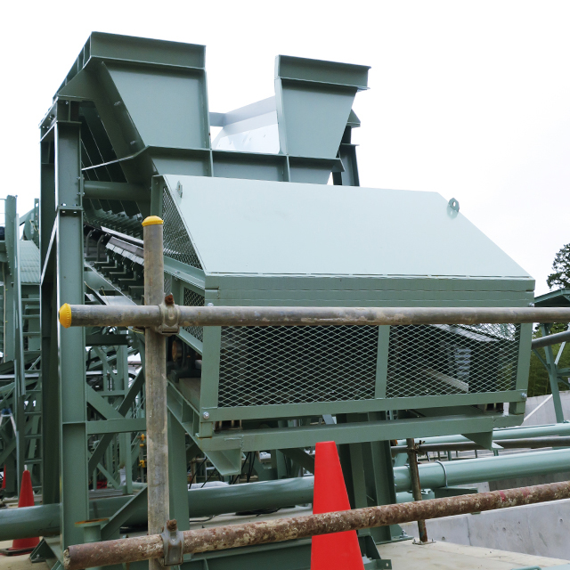
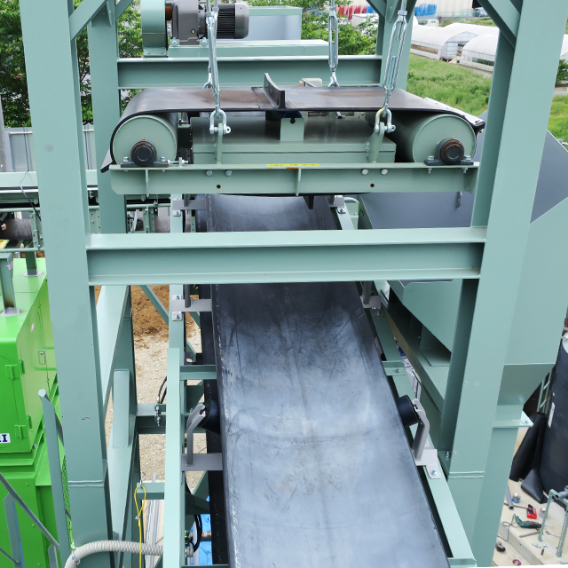
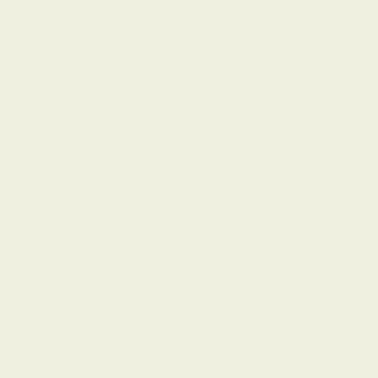
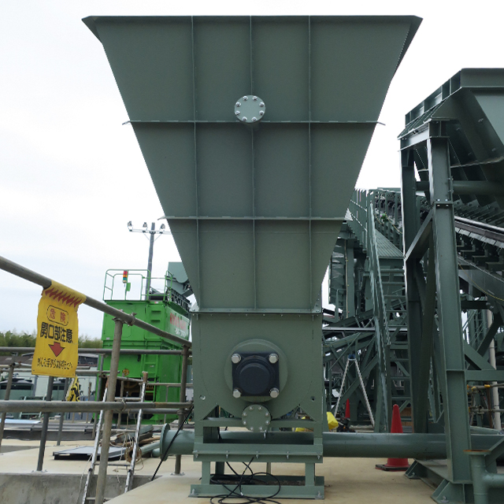
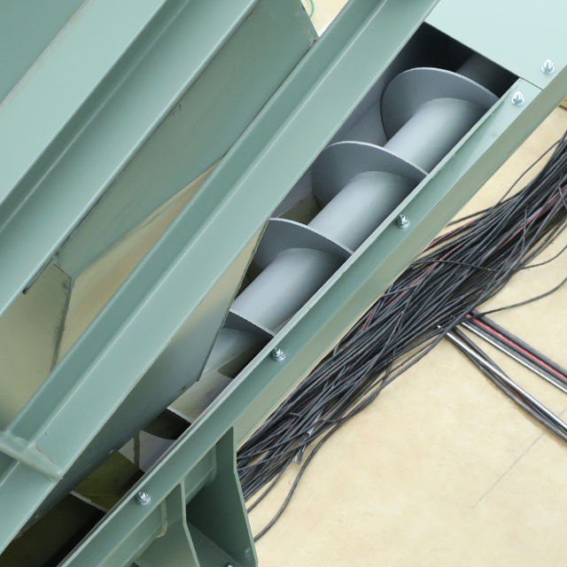
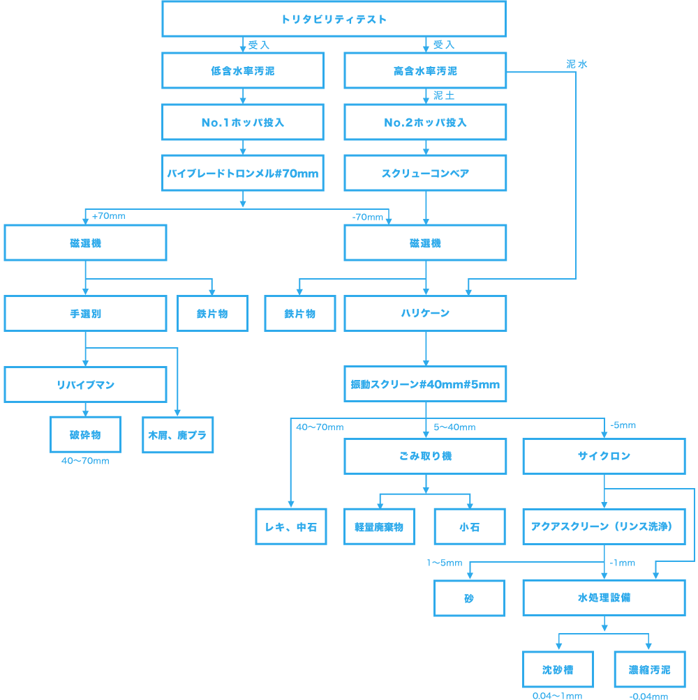

処理工程

千葉県白井市に今まで関東では設置されたことのない廃棄物の処理施設を設けました。
低含水率汚泥と高含水率汚泥を分けて受け入れるのは従来と変わりないですが、
そのあとの工程が他社では類を見ないものとなっています。
低含水率汚泥:
ルート1
高含水率汚泥:
ルート2
-

ベルトコンベアーからバイブレードトロンメルに落とし「乾式分級」して70ミリオーバーのコンクリート塊や大岩を取り除きます。
-

「手選別」で木くずや廃プラなどを除去した後、磁選機にかけて金属を除去します。その後、破砕機にかけて13ミリアンダーの小石を製造します。
-

70ミリアンダーで出てきた泥と石とそのほかは、湿式洗浄のために「ハリケーン」に送られます。ハリケーンに投入する前にここでも磁選機で鉄系金属を除去します。
-

専用受け入れピットA-3から、沈殿物ではない上部の浮遊軽量固形物と一緒に泥水をポンプでハリケーンに直接送り込みます。そこで水の添加の役割もしますが、水の中の泥分を摩砕洗浄します。
-

沈んだ泥分を水と一緒にバックホーでくみ上げて、スクリューコンベア―ホッパーに投入します。スクリューコンベア―で確実に固形分をハリケーンに送り込みます。スクリューコンベアーで絞られた水は沈砂槽へ落とします。
40ミリオーバーの処理
5ミリから40ミリの処理
5ミリアンダーの処理
40ミリオーバーの処理
専用の保管槽へ運ばれます。
5ミリから40ミリの処理
ごみ取り器に送り込まれ軽量のゴミと沈む重量物ごみとを選別します。選別後トロリー籠を使用し場外に搬出します。
5ミリアンダーの処理
水と一緒にフィードサンプへ落とされ、高圧ポンプでサイクロンへ送り込みます。
サイクロンから固形分はアクアスクリーンに送り込まれ「リンス洗い」をして仕上げ保管槽へ送り込まれます。
処理工程詳細図
